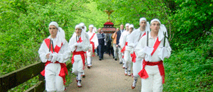
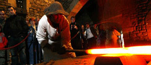

|
 |
| MAIATZAK 5 MAYO | |
9:00 |
Goiz Deia Txistulari taldearen goiz deia. |
10:30 |
Gurutze deunaren erlikiaren itzulera Mirandaolako elizara txistulari, dantzari eta herritarrekin.  Retorno en procesión de la reliquia de la cruz a Mirandaola acompañada por los txistularis, dantzaris y legazpiarras. |
11:00 |
Meza Nagusia Mirandaolako Ermitan Santikutz Abesbatzaren partaidetzarekin. |
11:45 |
Olagizonei ongietorria eta ohorezko ezpata-dantza. |
12:00 |
Ola martxan jartzea.  |
12:30 |
JAIAREN HASIERA: Korosti eta Sustraiak taldeetako dantzari txikiak, Haztegi Ikastolako
bertsolariak, Mirariaren antzezpena Domingo Agirre Ikastetxeko ikasleen eskutik, Bertso Olariak
elkarteko bertsolari gaztetxoak, Haztegi Ikastolako trikitilariak. |
14:00 |
Herri Bazkaria. Bakoitzak berea eraman beharko du. |
16:00 |
Erromeria Elustondo anai-arrebekin. |
18:30 |
HERRIRA ITZULTZEA Urolatarrak Txaranga eta erraldoiekin, Buruhandiak Bikuñan
izango dira zain. |